CODES / fit / kriging (methods)
Methods of the class kriging
Contents
eval
Evaluate mean prediction of new samples x
Syntax
- y_hat=kr.eval(x) return the Kriging values y_hat of the samples x.
- [y_hat,grad]=kr.eval(x) return the gradients grad at x.
Example
kr=CODES.fit.kriging([1 1;20 2],[2;-1]);
[y_hat,grad]=kr.eval([10 0.5;5 0.6;14 0.8]);
CODES.common.disp_matrix([y_hat grad],[],{'Y','grad1','grad2'})
Y grad1 grad2 0.577501 -0.0241364 0.484064 0.918653 -0.0579477 2.09191 0.562664 -0.0282549 0.155311
See also
eval_var eval_all P_poseval_var
Evaluate predicted variance at new samples x
Syntax
- var_hat=kr.eval_var(x) return the Kriging variance var_hat of the samples x.
- [var_hat,grad]=kr.eval_var(x) return the gradients grad at x.
Example
kr=CODES.fit.kriging([1 1;20 2],[2;-1]);
[y_hat,grad]=kr.eval_var([10 0.5;5 0.6;14 0.8]);
CODES.common.disp_matrix([y_hat grad],[],{'Y','grad1','grad2'})
Y grad1 grad2
2.244 0.00374117 -0.0750312
2.07474 0.0485198 -1.75156
2.24607 0.00354417 -0.0196841
See also
eval eval_all P_poseval_all
Evaluate predicted mean and variance at new samples x
Syntax
- y_hat=kr.eval_var(x) return the Kriging variance var_hat of the samples x.
- [y_hat,var_hat]=kr.eval_var(x) return the Kriging variance var_hat of the samples x.
- [y_hat,var_hat,grad_y]=kr.eval_var(x) return the gradients of the mean grad_y at x.
- [y_hat,var_hat,grad_y,grad_var]=kr.eval_var(x) return the gradients of the variance grad_var at x.
Example
kr=CODES.fit.kriging([1 1;20 2],[2;-1]); [y_hat,var_hat,grad_y,grad_var]=kr.eval_all([10 0.5;5 0.6;14 0.8]); CODES.common.disp_matrix([y_hat var_hat grad_y grad_var],[],... {'Y','Var','Y_grad1','Y_grad2','Var_grad1','Var_grad2'})
Y Var Y_grad1 Y_grad2 Var_grad1 Var_grad2 0.577501 2.244 -0.0241364 0.484064 0.00374117 -0.0750312 0.918653 2.07474 -0.0579477 2.09191 0.0485198 -1.75156 0.562664 2.24607 -0.0282549 0.155311 0.00354417 -0.0196841
See also
eval eval_var P_posP_pos
Compute the probability of the kriging prediction to be higher than a threshold.
Syntax
- p=kr.eval_var(x) return the probability p of the samples x to be higher than 0.
- p=kr.eval_var(x,th) return the probability p of the samples x to be higher than th.
- [p,grad]=kr.eval_var(...) return the gradient grad of probability p.
Example
kr=CODES.fit.kriging([1 1;20 2],[2;-1]);
[p,grad]=kr.P_pos([10 0.5;5 0.6;14 0.8],0.25);
CODES.common.disp_matrix([p grad],[],{'p','grad1','grad2'})
p grad1 grad2 0.586529 -0.00634712 0.127294 0.678753 -0.0163545 0.590396 0.58263 -0.00742364 0.0408098
class
Provides the sign of input y, different than MATLAB sign function for y=0.
Syntax
- lab=kr.class(y) computes labels lab for function values y.
Example
svm=CODES.fit.svm([1;2],[1;-1]); y=[1;-1;-2;3;0]; lab=svm.class(y); disp([[' y : ';' lab : ';'sign : '] num2str([y';lab';sign(y')],'%1.3f ')])
y : 1.000 -1.000 -2.000 3.000 0.000 lab : 1.000 -1.000 -1.000 1.000 -1.000 sign : 1.000 -1.000 -1.000 1.000 0.000
See also
eval_classeval_class
Evaluate class of new samples x
Syntax
- lab=kr.eval_class(x) computes the labels lab of the input samples x.
- [lab,y_hat]=kr.eval_class(x) also returns predicted function values y_hat.
Example
kr=CODES.fit.kriging([1;2],[1;-1]); x=[0;1;2;3]; [lab,y_hat]=kr.eval_class(x); disp([['y_hat : ';' lab : '] num2str([y_hat';lab'],'%1.3f ')])
y_hat : 0.000 1.000 -1.000 -0.000 lab : 1.000 1.000 -1.000 -1.000
See also
classscale
Perform scaling of samples x_unsc
Syntax
- x_sc=kr.scale(x_unsc) scales x_unsc.
Example
kr=CODES.fit.kriging([1 1;20 2],[1;-1]);
x_unsc=[1 1;10 1.5;20 2];
x_sc=kr.scale(x_unsc);
disp(' Unscaled Scaled')
disp([x_unsc x_sc])
Unscaled Scaled
1.0000 1.0000 0 0
10.0000 1.5000 0.4737 0.5000
20.0000 2.0000 1.0000 1.0000
See also
unscaleunscale
Perform unscaling of samples x_sc
Syntax
- x_unsc=kr.unscale(x_sc) unscales x_sc.
Example
kr=CODES.fit.kriging([1 1;20 2],[1;-1]);
x_sc=[0 0;0.4737 -1;1 1];
x_unsc=kr.unscale(x_sc);
disp(' Scaled Unscaled')
disp([x_sc x_unsc])
Scaled Unscaled
0 0 1.0000 1.0000
0.4737 -1.0000 10.0003 0
1.0000 1.0000 20.0000 2.0000
See also
scalescale_y
Perform scaling of function values y_unsc
Syntax
- y_sc=kr.scale_y(y_unsc) scales y_unsc.
Example
kr=CODES.fit.kriging([1 1;20 2],[1;-3]);
y_unsc=[0.5;1;2];
y_sc=kr.scale_y(y_unsc);
CODES.common.disp_matrix([y_unsc y_sc],[],{'Unscaled','Scaled'})
Unscaled Scaled
0.5 0.875
1 1
2 1.25
See also
unscale_yunscale_y
Perform unscaling of function values y_sc
Syntax
- y_unsc=kr.unscale_y(y_sc) unscales y_sc.
Example
kr=CODES.fit.kriging([1 1;20 2],[1;-1]);
y_sc=[0;0.25;0.75];
y_unsc=kr.unscale_y(y_sc);
CODES.common.disp_matrix([y_unsc y_sc],[],{'Unscaled','Scaled'})
Unscaled Scaled
-1 0
-0.5 0.25
0.5 0.75
See also
scaleadd
Retrain kr after adding a new sample (x,y)
Syntax
- kr=kr.add(x,y) adds a new sample x with function value y.
Example
kr=CODES.fit.kriging([1;2],[1;-1]); disp(['Predicted class at x=1.4, ' num2str(kr.eval_class(1.4))]) kr=kr.add(1.5,-1); disp(['Updated predicted class at x=1.4, ' num2str(kr.eval_class(1.4))])
Predicted class at x=1.4, 1 Updated predicted class at x=1.4, -1
mse
Compute the Mean Square Error (MSE) for (x,y) (not for classification)
Syntax
- stat=kr.mse(x,y) computes the MSE for the samples (x,y).
Description
For a representative (sample,label) 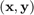 of the domain of interest and predicted values 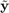, the Mean Square Error is defined as:
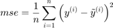
Example
f=@(x)x.*sin(x);
x=linspace(0,10,5)';y=f(x);
kr=CODES.fit.kriging(x,y);
x_t=linspace(0,10,1e4)';y_t=f(x_t);
err=kr.mse(x_t,y_t);
disp('Mean Square Error:')
disp(err)
Mean Square Error:
4.8282
See also
auc | me | rmse | rmae | r2 | cv | loormse
Compute the Root Mean Square Error (RMSE) for (x,y) (not for classification)
Syntax
- stat=kr.rmse(x,y) computes the RMSE for the samples (x,y).
Description
For a representative (sample,label) of the domain of interest and predicted values , the Root Mean Square Error is defined as:
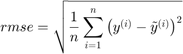
Example
f=@(x)x.*sin(x);
x=linspace(0,10,5)';y=f(x);
kr=CODES.fit.kriging(x,y);
x_t=linspace(0,10,1e4)';y_t=f(x_t);
err=kr.rmse(x_t,y_t);
disp('Root Mean Square Error:')
disp(err)
Root Mean Square Error:
2.1973
See also
auc | me | mse | rmae | r2nmse
Compute the Normalized Mean Square Error (NMSE) (%) for (x,y) (not for classification)
Syntax
- stat=kr.nmse(x,y) computes the NMSE for the samples (x,y).
Description
For a representative (sample,label) of the domain of interest and predicted values , the Normalized Mean Square Error is defined as:
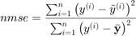
where 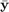 is the average of the training values 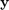.
Example
f=@(x)x.*sin(x); x=linspace(0,10,5)';y=f(x); kr=CODES.fit.kriging(x,y); x_t=linspace(0,10,1e4)';y_t=f(x_t); err=kr.nmse(x_t,y_t); disp('Normalized Mean Square Error:') disp([num2str(err,'%5.2f') ' %'])
Normalized Mean Square Error: 35.30 %
See also
auc | me | mse | rmse | rmae | r2rmae
Compute the Relative Maximum Absolute Error (RMAE) for (x,y) (not for classification)
Syntax
- stat=kr.rmae(x,y) computes the RMAE for the samples (x,y).
Description
For a representative (sample,label) of the domain of interest and predicted values , the Relative Maximum Absolute Error is defined as:
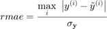
where  is the standard deviation of the training values :
is the standard deviation of the training values :
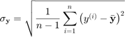
where is the average of the training values .
Example
f=@(x)x.*sin(x);
x=linspace(0,10,5)';y=f(x);
kr=CODES.fit.kriging(x,y);
x_t=linspace(0,10,1e4)';y_t=f(x_t);
err=kr.rmae(x_t,y_t);
disp('Relative Maximum Absolute Error:')
disp(err)
Relative Maximum Absolute Error:
1.6722
See also
auc | me | mse | rmse | r2r2
Compute the coefficient of determination (R squared) for (x,y) (not for classification)
Syntax
- stat=kr.r2(x,y) computes the R squared for the samples (x,y)
- [stat,TSS]=kr.r2(x,y) return the Total Sum of Squares TSS
- [stat,TSS,RSS]=kr.r2(x,y) returns the Residual Sum of Squares RSS
Description
For a representative (sample,label) of the domain of interest and predicted values , the coefficient of determination is defined as:
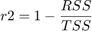
where:
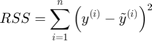
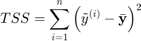
where is the average of the training values .
Example
f=@(x)x.*sin(x);
x=linspace(0,10,5)';y=f(x);
kr=CODES.fit.kriging(x,y);
x_t=linspace(0,10,1e4)';y_t=f(x_t);
err=kr.r2(x_t,y_t);
disp('Coefficient of determination:')
disp(err)
Coefficient of determination:
0.4391
See also
auc | me | mse | rmse | rmaeme
Compute the Misclassification Error (ME) for (x,y) (%)
Syntax
- stat=kr.me(x,y) compute the me for (x,y)
- stat=kr.me(x,y,use_balanced) returns Balanced Misclassification Error (BME) if use_balanced is set to true
Description
For a representative (sample,label) of the domain of interest and predicted labels , the classification error is defined as:
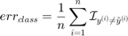
On the other hand, the balanced classification error is defined as:
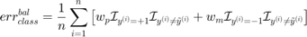
where 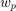 and 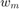 are weights computed based on training samples such that:
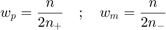
where 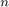 is the total number of samples and 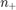 (resp. ) is the total number of positive (resp. negative) samples. This weights satisfy a set of condition:
- 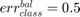 if all positive or all negative samples are misclassified;
- 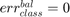 if all samples are properly classified;
- 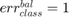 if all samples are misclassified;
- 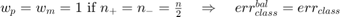.
This function is typically used to validate meta-models on an independent validation set as in Jiang and Missoum (2014).
Example
f=@(x)x-4; x=[2;8];y=f(x); kr=CODES.fit.kriging(x,y); x_t=linspace(0,10,1e4)';y_t=f(x_t); err=kr.me(x_t,y_t); bal_err=kr.me(x_t,y_t,true); disp('On evenly balanced training set, standard and balanced prediction error return same values') disp([err bal_err]) x=[2;5;8];y=f(x); kr=CODES.fit.kriging(x,y); err=kr.me(x_t,y_t); bal_err=kr.me(x_t,y_t,true); disp('On unevenly balanced training set, standard and balanced prediction error return different values') disp([err bal_err])
On evenly balanced training set, standard and balanced prediction error return same values
4.4600 4.4600
On unevenly balanced training set, standard and balanced prediction error return different values
0.0500 0.0375
See also
auc | mse | rmse | cv | looauc
Returns the Area Under the Curve (AUC) for (x,y) (%)
Syntax
- stat=CODES.fit.kr.auc(x,y) return the AUC stat for the samples (x,y)
- stat=CODES.fit.kr.auc(x,y,ROC) plot the ROC curves if ROC|is set to |true
- [stat,FP,TP]=CODES.fit.kr.auc(...) returns the false positive rate FP and the true positive rate TP
Description
A receiver operating characteristic (ROC) curve Metz (1978) is a graphical representation of the relation between true and false positive predictions for a binary classifier. It uses all possible decision thresholds from the prediction. In the case of kr classification, thresholds are defined by the kr values. More specifically, for each threshold a True Positive Rate:
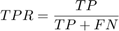
and a False Positive Rate:
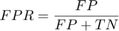
are calculated. 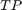 and  are the number of true positive and true negative predictions while 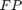 and 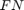 are the number of false positive and false negative predictions, respectively. The ROC curve represents 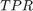 as a function of 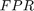.
are the number of true positive and true negative predictions while 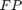 and 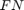 are the number of false positive and false negative predictions, respectively. The ROC curve represents 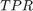 as a function of 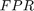.
Once the ROC curve is constructed, the area under the ROC curve (AUC) can be calculated and used as a validation metric. A perfect classifier will have an AUC equal to one. An AUC value of 0.5 indicates no discriminative ability.
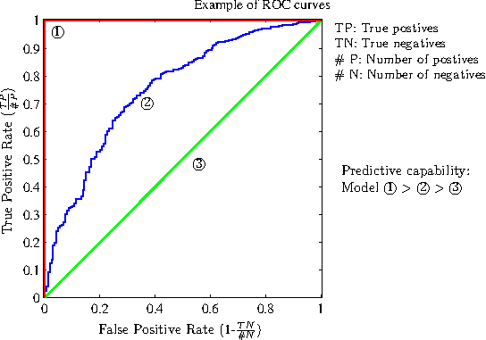
Example
f=@(x)x(:,2)-sin(10*x(:,1))/4-0.5; x=CODES.sampling.cvt(30,2);y=f(x); kr=CODES.fit.kriging(x,y); auc_val=kr.auc(kr.X,kr.Y); x_t=rand(1000,2); y_t=f(x_t); auc_new=kr.auc(x_t,y_t); disp(['AUC value over training set : ' num2str(auc_val,'%7.3f')]) disp([' AUC value over testing set : ' num2str(auc_new,'%7.3f')])
AUC value over training set : 100.000 AUC value over testing set : 99.999
See also
me | mse | rmse | cvloo
Returns the Leave One Out (LOO) error (%)
Syntax
- stat=kr.loo return the loo error stat
- stat=kr.loo(param,value) use set of parameters param and values value (c.f., parameter table)
Description
Define 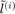 the 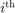 predicted label and 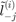 the predicted label using the kr trained without the 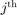 sample. The Leave One Out (LOO) error is defined as:
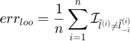
On the other hand, the balanced LOO error is defined as:
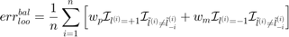
and are weights computed based on training samples such that:
where is the total number of samples and (resp. ) is the total number of positive (resp. negative) samples. This weights satisfy a set of condition:
- 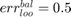 if all positive or all negative samples are misclassified;
- 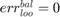 if no samples are misclassified;
- 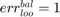 if all samples are miscalssified;
- 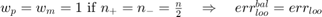.
Parameters
| param | value | Description |
|---|---|---|
| 'use_balanced' | logical, {false} | Only for Misclassification Error, uses Balanced Misclassification Error if true> |
| 'metric' | {'me'}, 'mse' | Metric on which LOO procedure is applied, Misclassification Error ('me') or Mean Square Error ('mse') |
Example
f=@(x)x(:,2)-sin(10*x(:,1))/4-0.5; x=CODES.sampling.cvt(6,2);y=f(x); kr=CODES.fit.kriging(x,y); loo_err=kr.loo; bal_loo_err=kr.loo('use_balanced',true); disp('On evenly balanced training set, standard and balanced loo error return same values') disp([loo_err bal_loo_err]) x=CODES.sampling.cvt(5,2);y=f(x); kr=CODES.fit.kriging(x,y); loo_err=kr.loo; bal_loo_err=kr.loo('use_balanced',true); disp('On unevenly balanced training set, standard and balanced loo error return different values') disp([loo_err bal_loo_err])
On evenly balanced training set, standard and balanced loo error return same values
50 50
On unevenly balanced training set, standard and balanced loo error return different values
40 50
See also
cv | auc | me | msecv
Returns the Cross Validation (CV) error over 10 folds (%)
Syntax
- stat=kr.cv return the cv error stat
- stat=kr.cv(param,value) use set of parameters param and values value (c.f., parameter table)
Description
This function follow the same outline as the loo but uses a 10 fold CV procedure instead of an fold one. Therefore, the cv and loo are the same for 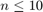 and cv returns an estimate of loo that is faster to compute for 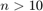.
Parameters
| param | value | Description |
|---|---|---|
| 'use_balanced' | logical, {false} | Only for Misclassification Error, uses Balanced Misclassification Error if true> |
| 'metric' | 'auc', {'me'}, 'mse' | Metric on which CV procedure is applied: Area Under the Curve ('auc'), Misclassification Error ('me') or Mean Square Error ('mse') |
Example
f=@(x)x(:,1)-0.5; x=CODES.sampling.cvt(30,2);y=f(x); kr=CODES.fit.kriging(x,y); rng(0); % To ensure same CV folds cv_err=kr.cv; rng(0); bal_cv_err=kr.cv('use_balanced',true); disp('On evenly balanced training set, standard and balanced cv error return same values') disp([cv_err bal_cv_err]) x=CODES.sampling.cvt(31,2);y=f(x); kr=CODES.fit.kriging(x,y); rng(0); cv_err=kr.cv; rng(0); bal_cv_err=kr.cv('use_balanced',true); disp('On unevenly balanced training set, standard and balanced cv error return different values') disp([cv_err bal_cv_err])
On evenly balanced training set, standard and balanced cv error return same values 50.0000 50.0000 On unevenly balanced training set, standard and balanced cv error return different values 48.3333 49.9444
See also
loo | auc | me | mseclass_change
Compute the change of class between two meta-models over a sample x (%)
Syntax
- stat=kr.class_change(kr_old,x) compute the change of class of the sample x from meta-model kr_old to meta-model kr
Description
This metric was used in Basudhar and Missoum (2008) as convergence metric and is defined as:
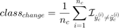
where 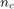 is the number of convergence samples and 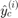 (resp. 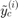) is the convergence predicted label using kr_old (resp. kr).
Example
f=@(x)x-4; x=[2;8];y=f(x); kr=CODES.fit.kriging(x,y); x_t=linspace(0,10,1e4)';y_t=f(x_t); err=kr.me(x_t,y_t); kr_new=kr.add(5,f(5)); err_new=kr_new.me(x_t,y_t); class_change=kr_new.class_change(kr,x_t); disp(['Absolute change in prediction error : ' num2str(abs(err_new-err))]) disp(['Class change : ' num2str(class_change)])
Absolute change in prediction error : 4.41 Class change : 4.51
plot
Display the kriging kr
Syntax
- kr.plot plot the meta-model kr
- kr.plot(param,value) use set of parameters param and values value (c.f., parameter table)
- h=kr.plot(...) returns graphical handles
Parameters
| param | value | Description |
|---|---|---|
| 'new_fig' | logical, {false} | Create a new figure |
| 'lb' | numeric, {kr.lb_x} | Lower bound of plot |
| 'ub' | numeric, {kr.ub_x} | Upper bound of plot |
| 'samples' | logical, {true} | Plot training samples |
| 'lsty' | string, {'k-'} | Line style (1D), see also LineSpec |
| 'psty' | string, {'ko'} | Samples style, see also LineSpec |
| 'legend' | logical, {true} | Add legend |
| 'CI' | logical, {true} | Display confidence interval on the predictor. |
| 'alpha' | numeric, {0.05} | Significance level for (1-alpha) confidence interval. |
| 'CI_color' | string or rgb color, {'k'} | Color of the confidence interval. |
| 'CI_alpha' | numeric, {0.3} | Alpha (transparence) level of the conficende interval. |
Example
f=@(x)x-4;
x=[2;8];y=f(x);
kr=CODES.fit.kriging(x,y);
kr.plot('new_fig',true)
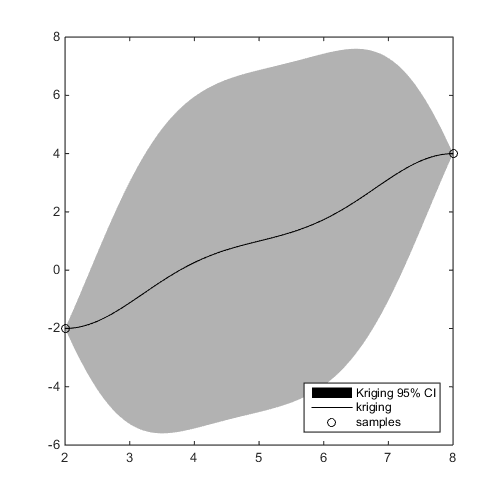 See also
isoplotisoplot
Display the 0 isocontour of the meta-model kr
Syntax
- kr.isoplot plot the 0 isocontour of the meta-model kr
- kr.isoplot(param,value) use set of parameters param and values value (c.f., parameter table)
- h=kr.isoplot(...) returns graphical handles
Parameters
| param | value | Description |
|---|---|---|
| 'new_fig' | logical, {false} | Create a new figure. |
| 'th' | numeric, {0} | Isovalue to plot. |
| 'lb' | numeric, {kr.lb_x} | Lower bound of plot. |
| 'ub' | numeric, {kr.ub_x} | Upper bound of plot. |
| 'samples' | logical, {true} | Plot training samples. |
| 'mlsty' | string, {'r-'} | Line style for -1 domain (1D), see also LineSpec. |
| 'plsty' | string, {'b-'} | Line style for +1 domain (1D), see also LineSpec. |
| 'bcol' | string, {'k'} | Boundary color, see also LineSpec. |
| 'mpsty' | string, {'ro'} | -1 samples style, see also LineSpec. |
| 'ppsty' | string, {'bo'} | +1 samples style, see also LineSpec. |
| 'use_light' | logical, {true} | Use light (3D). |
| 'prev_leg' | cell, { {} } | Previous legend entry. |
| 'legend' | logical, {true} | Add legend. |
Example
f=@(x)x-4;
x=[2;8];y=f(x);
kr=CODES.fit.kriging(x,y);
kr.isoplot('new_fig',true)
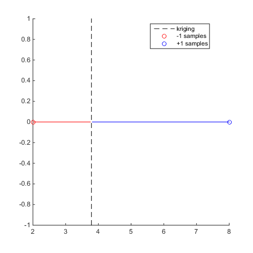 See also
isoplotredLogLH
Compute the reduced log likelihood
Syntax
- lh=kr.redLogLH compute the reduced log likelihood lh using parameters stored in kr.
- lh=kr.redLogLH(theta) compute the reduced log likelihood lh using theta.
- lh=kr.redLogLH(theta,delta_2) compute the reduced log likelihood lh using theta and delta_2.
Example
kr=CODES.fit.kriging([1 1;20 2],[2;-1]); lh1=kr.redLogLH; lh2=kr.redLogLH(kr.theta,kr.sigma_n_2/kr.sigma_y_2); lh3=kr.redLogLH(1,0); disp([lh1 lh2 lh3])
1.3863 1.3863 1.0003
Copyright © 2015 Computational Optimal Design of Engineering Systems (CODES) Laboratory. University of Arizona.
|
|
Computational Optimal Design of Engineering Systems |

|